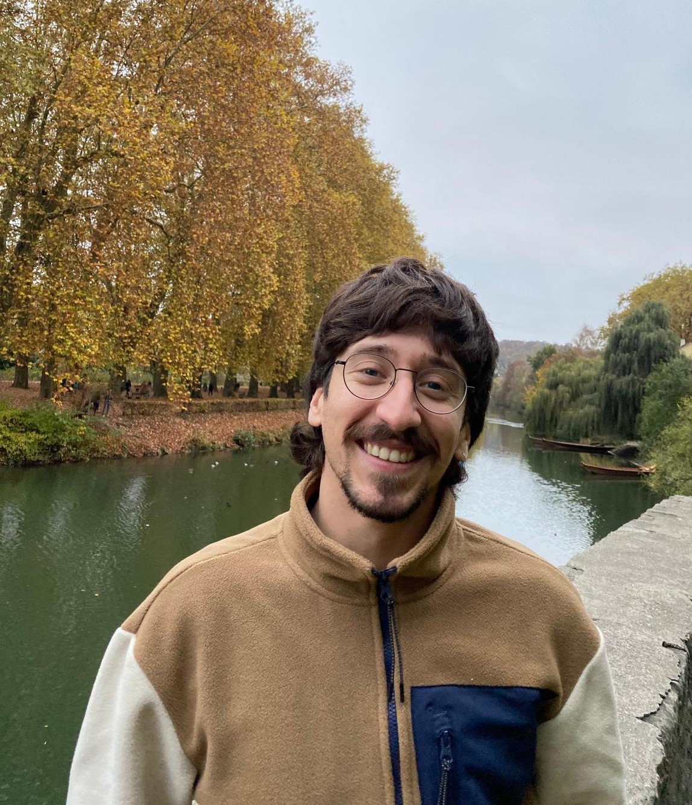

- Formality of Kähler manifolds revisited, May 2024, Après-midi parisienne de topologie algébrique #6, Paris, France (Invited Talk)
- Formality of Kähler manifolds revisited, Jan 2024, Workshop Alps 2024, Sainte-Foy-Tarentaise, France (Invited Talk)
- Formality of Kähler manifolds revisited, Nov 2023, Operadic Methods in Geometry, Barcelona, Spain (Invited Talk)
- Enriched categories and ∞-cosmoi, Oct 2023, Infinity Cosmoi seminar of the topology group at Universitat de Barcelona, Barcelona, Spain
- Formality of Kähler manifolds revisited, Jul 2023, Young Topologists Meeting 2023, Lausanne, Switzerland
- Background on MU and BP, Jun 2023, Talbot Workshop 2023, Minnesota, USA
- Formality of Hodge structures and Kähler manifolds, Nov 2022, Homotopical Methods in Geometry 2022, Barcelona, Spain (Invited Talk)
- Goodwillie calculus I, Oct 2022, Infinity Topoi seminar of the topology group at Universitat de Barcelona, Barcelona, Spain
- Formal Deformation Theory of Complex Structures, Apr 2022, Deformation theory of complex manifolds and higher homotopical structures seminar, Barcelona, Spain
Pedro Magalhães
PhD Student
Departament de Matemàtiques i Informàtica
Universitat de Barcelona
Gran Via 585
08007 Barcelona
e-mail: pedro.meneses@ub.edu
Office: P.01
 ORCID
ORCID

About Me
Hi! I'm a PhD student at Universitat de Barcelona, working under the supervision of Joana Cirici. Before, I did my Bachelors and Masters degree in mathematics at Instituto Superior Técnico in Lisboa, Portugal.
I'm generally interested in interactions between Homotopy Theory and Complex and Algebraic Geometry. This includes:
- Rational Homotopy Theory and Formality,
- Operadic Calculus and Koszul Duality,
- Topology of algebraic varieties,
- Mixed Hodge Theory.
Invited and Contributed Talks
Posters
- Real Homotopy and Hodge Theory in Kähler Geometry, Jul 2022, Young Topologists Meeting 2022, Copenhagen, Denmark

Teaching
- Calculus, Bioinformatics degree, Universitat Pompeu Fabra, Barcelona (2022-2024)